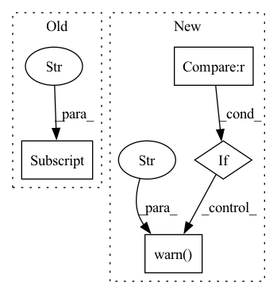

Pattern ID :35430
Before Change
Get ground truth segmentation maps for evaluation.
gt_seg_maps = []
for img_info in self.img_infos:
seg_map = osp.join(self.ann_dir, img_info["ann"] ["seg_map"])
if efficient_test:
gt_seg_map = seg_map
else:After Change
def get_gt_seg_maps(self, efficient_test=None):
Get ground truth segmentation maps for evaluation.
if efficient_test is not None :
warnings.warn(
"DeprecationWarning: ``efficient_test`` has been deprecated "
"since MMSeg v0.16, the ``get_gt_seg_maps()`` is CPU memory "
"friendly by default. " )
for idx in range(len(self)):
ann_info = self.get_ann_info(idx)
results = dict(ann_info=ann_info)In pattern: SUPERPATTERN
Frequency: 4
Non-data size: 4
Instances Fragment ID: 100632939
Project Name: rayguan97/ganav-offroad
Commit Name: 35e8f538bedb93a3c3437fbea76ffff4fd9e7c96
Time: 2022-07-26
Author: rayguan@terpmail.umd.edu
File Name: mmseg/datasets/custom.py
M Class Name: CustomDataset
N Class Name: CustomDataset
M Method Name: get_gt_seg_maps(2)
N Method Name: get_gt_seg_maps(2)
M Parent Class: Dataset
N Parent Class: Dataset
M File Name: mmseg/datasets/custom.py
N File Name: mmseg/datasets/custom.py
M Start Line: 235
M End Line: 244
N Start Line: 255
N End Line: 266
Before Change
LOG.debug("valid area after pad: %s", meta["valid_area"])
for ann in anns:
ann["valid_area"] = meta["valid_area"]
return image, anns, meta
def center_pad(self, image, anns):After Change
self.target_size = target_size
def __call__(self, image, anns, meta, mask_miss=None):
if mask_miss is not None :
warnings.warn("mask_miss transformation is not implemented" )
image = PIL.Image.fromarray(image)
meta = copy.deepcopy(meta)
anns = copy.deepcopy(anns)
Fragment ID: 100632936
Project Name: hellojialee/offsetguided
Commit Name: d5e2d5aa3ec9afb8ed5fe99acea5a7020d39da96
Time: 2020-08-08
Author: ustclijia@gmail.com
File Name: transforms/pad.py
M Class Name: CenterPad
N Class Name: CenterPad
M Method Name: __call__(5)
N Method Name: __call__(4)
M Parent Class: Preprocess
N Parent Class: Preprocess
M File Name: transforms/pad.py
N File Name: transforms/pad.py
M Start Line: 19
M End Line: 32
N Start Line: 19
N End Line: 33
Before Change
self.save_hyperparameters() // type: ignore[operator]
self.hyperparams = cast(Dict[str, Any], self.hparams)
self.ignore_zeros = None if kwargs["ignore_zeros"] else 0
self.config_task()
After Change
if not isinstance(kwargs["ignore_index"], (int, type(None))):
raise ValueError("ignore_index must be an int or None")
if (kwargs["ignore_index"] is not None) and (kwargs["loss"] == "jaccard") :
warnings.warn(
"ignore_index has no effect on training when loss="jaccard"" ,
UserWarning,
)
self.ignore_index = kwargs["ignore_index"]
self.config_task()
self.train_metrics = MetricCollection( Fragment ID: 100632930
Project Name: microsoft/torchgeo
Commit Name: c3e11e48b8878576c5bff5cf8e44557b3647f734
Time: 2022-07-02
Author: calebrob6@gmail.com
File Name: torchgeo/trainers/segmentation.py
M Class Name: SemanticSegmentationTask
N Class Name: SemanticSegmentationTask
M Method Name: __init__(1)
N Method Name: __init__(1)
M Parent Class: LightningModule
N Parent Class: LightningModule
M File Name: torchgeo/trainers/segmentation.py
N File Name: torchgeo/trainers/segmentation.py
M Start Line: 92
M End Line: 92
N Start Line: 92
N End Line: 99
Before Change
if adjoint:
try:
adjoint_params = tuple(kwargs["adjoint_params"] )
except KeyError:
try:
adjoint_params = tuple(func.parameters())After Change
for buffer in X.buffers():
// Compare based on id to avoid PyTorch not playing well with using `in` on tensors.
if buffer.requires_grad and id(buffer) not in _adjoint_params :
warnings.warn("One of the inputs to the control path X requires gradients but is not listed in "
"`options["adjoint_params"]`. This is probably a mistake: it will not receive a gradient "
"when using the adjoint method. Either have the input not require gradients (if that "
"was unintended), or include it (and every other parameter needing gradients) in "
"`adjoint_params`. For example:\n"
"```\n"
"coeffs = ...\n"
"func = ...\n"
"X = NaturalCubicSpline(coeffs)\n"
"adjoint_params = tuple(func.parameters()) + (coeffs,)\n"
"cdeint(X=X, func=func, ..., adjoint_params=adjoint_params)\n"
"```" )
vector_field = _VectorField(X=X, func=func, is_tensor=is_tensor, is_prod=is_prod)
odeint = torchdiffeq.odeint_adjoint if adjoint else torchdiffeq.odeint
out = odeint(func=vector_field, y0=z0, t=t, **kwargs) Fragment ID: 100632928
Project Name: patrick-kidger/torchcde
Commit Name: a7b8403a215d7433eb14abe647b39dc098b9933d
Time: 2021-02-06
Author: 33688385+patrick-kidger@users.noreply.github.com
File Name: torchcde/solver.py
M Class Name: AnonimousClass
N Class Name: AnonimousClass
M Method Name: cdeint(5)
N Method Name: cdeint(5)
M Parent Class:
N Parent Class:
M File Name: torchcde/solver.py
N File Name: torchcde/solver.py
M Start Line: 179
M End Line: 200
N Start Line: 180
N End Line: 208